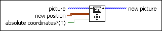

Move Pen VI
Owning Palette: Picture Functions VIs
Requires: Base Development System
Changes the current pen location of a picture to the specified position or by the specified amount if the position is relative.

 Add to the block diagram Add to the block diagram |
 Find on the palette Find on the palette |